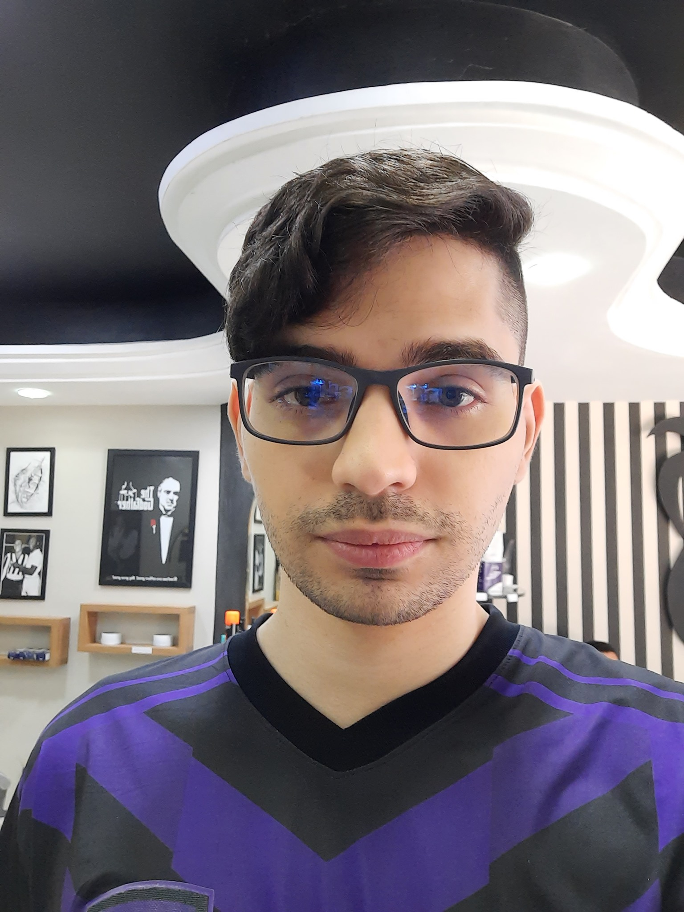

Gustavo Leckar
Links:
Desenvolvedor web full stack em formação. Nascido no Brasil, no estado de São Paulo, mas reside no Rio de Janeiro.
Habilidades e competências:
- Curioso e minucioso;
- HTML5 e Javascript;
- Tenta encontrar a forma mais eficiente de se fazer algo;
- Quick learner;
- Facilidade com tecnologias;
Passatempos:

Ele gosta bastante de ler em suas horas vagas, apesar de ler mais textos em ingles que em sua língua materna. Também costuma jogar jogos eletrônicos e assistir a videos variados no Youtube.
Conteúdo recomendado:
- Melhor blog de computação do mundo!
- Inspiração da paleta de cores da página.
- Instituição onde estudo.